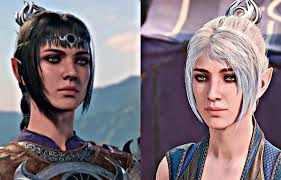
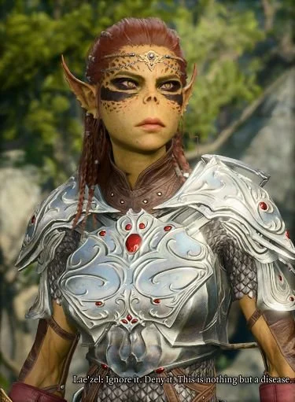
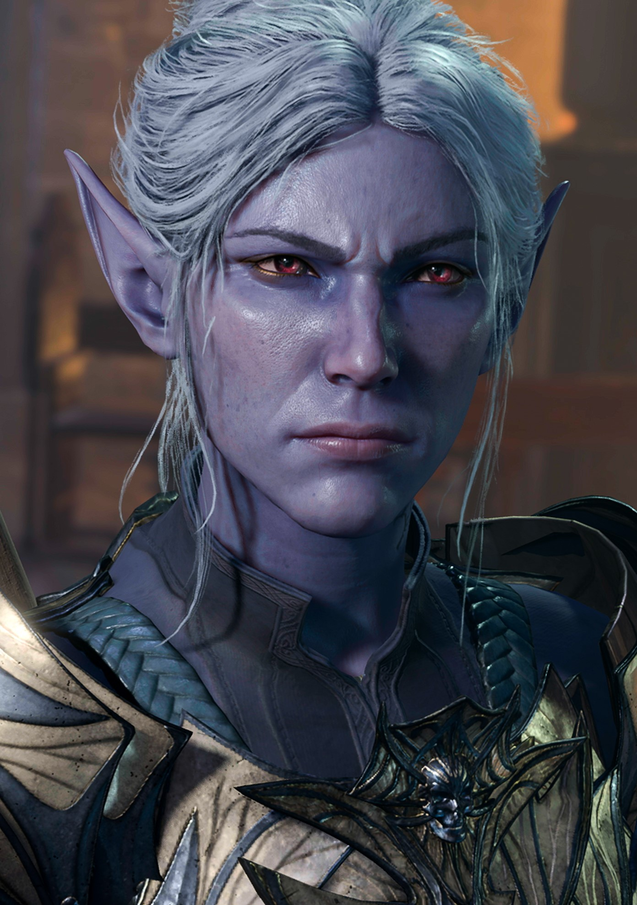
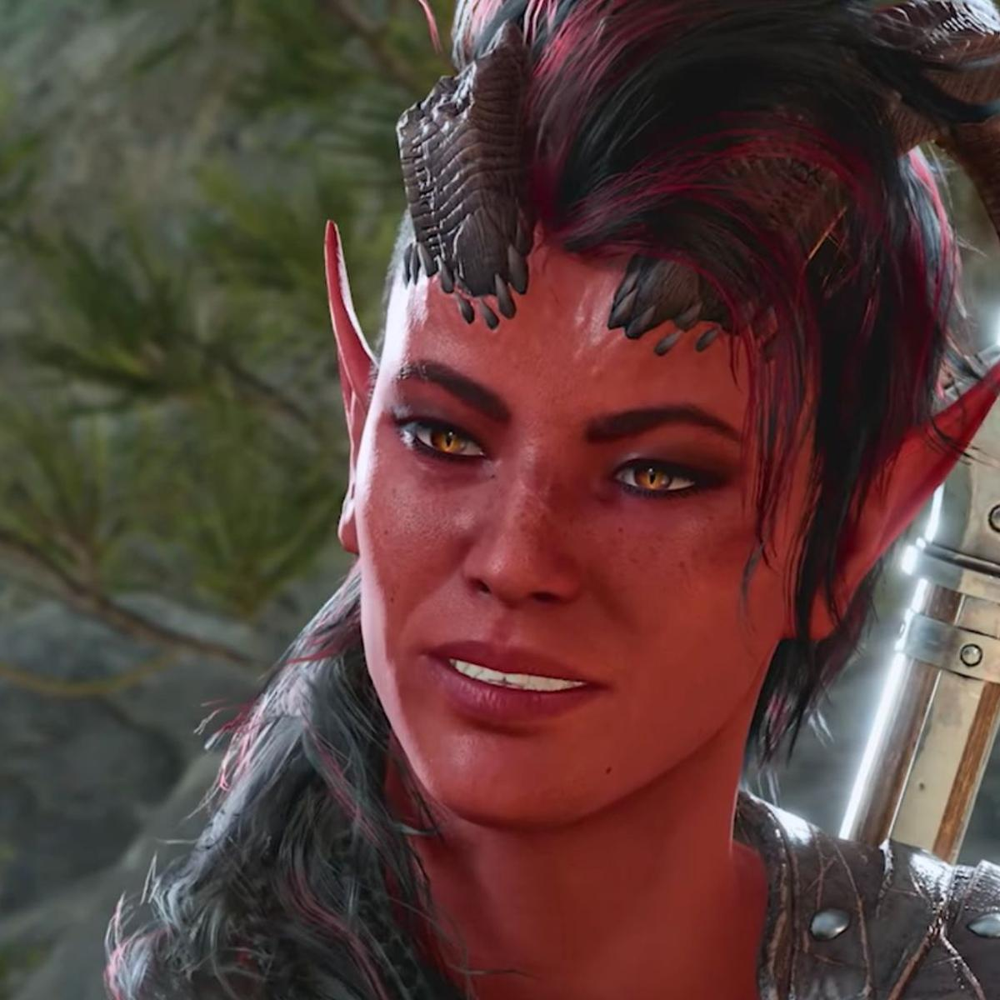
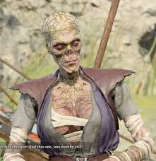
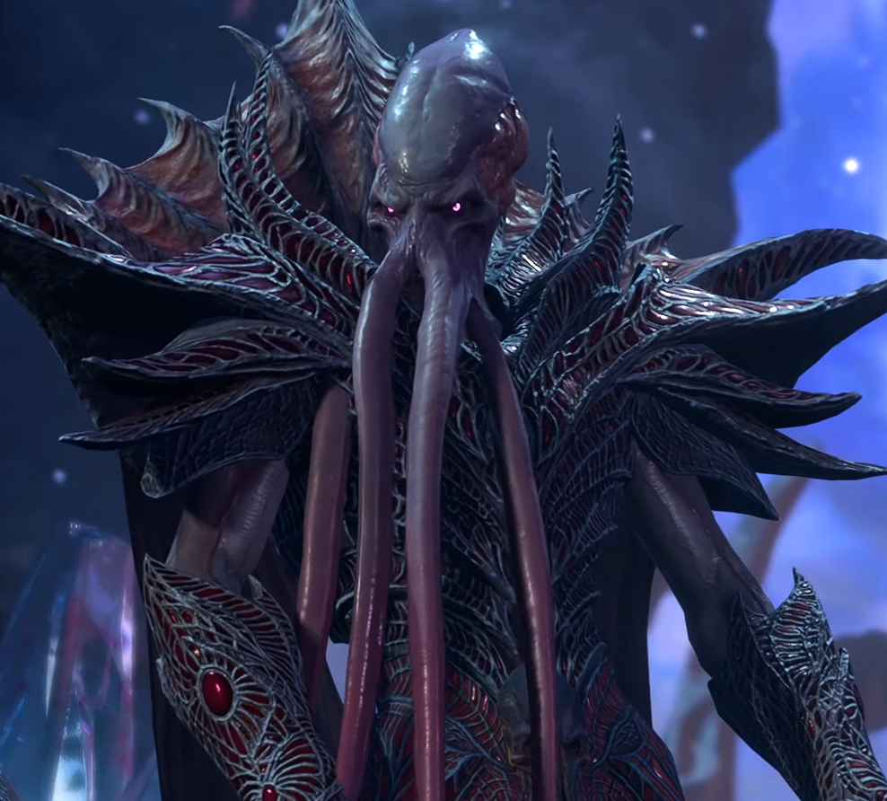

| Character |
Description |
 Astarion Astarion |
A charming vampire spawn rogue with a dark past and a thirst for freedom. |
| Shadowheart |
A mysterious half-elf cleric of Shar, struggling with her faith and identity. |
| Gale |
A human wizard with a tragic secret and a penchant for powerful magic. |
| Lae'zel |
A fierce githyanki warrior determined to prove herself and reclaim her honor. |
 Wyll Wyll |
A charismatic human warlock known as the Blade of Frontiers, seeking redemption. |
| Minthara |
Minthara is a ruthless and commanding drow paladin whose unwavering devotion to the Absolute is matched only by her cold ambition and lethal grace. |
| Karlach |
A tiefling barbarian with a fiery temper and a strong sense of loyalty. |
| Withers |
An old friend that helps the party with revivals and other member support. |
| The Emperor |
A mind flayer that is trapped in the prism protecting the characters from turning into mind flayers themselves before defeating the absolute and the generals and save the world |